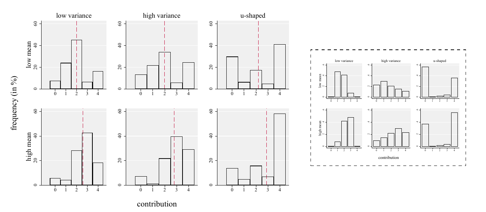

Strategic Behavior with Tight, Loose and Polarized Norms
Descriptive norms -the behavior of other individuals in one's reference group - play a key role in shaping individual decisions in managerial contexts and beyond. Organizations are increasingly using information about descriptive norms to nudge positive behavior change. When characterizing peer decisions, a standard approach in the literature is to focus on average behavior. In this paper, we argue both theoretically and empirically that not only averages but also the shape of the whole distribution of behavior can play a crucial role in how people react to descriptive norms. Using a representative sample of the U.S. population, we experimentally investigate how individuals react to strategic environments that are characterized by different distributions of behavior, focusing on the distinction between tight (i.e., characterized by low behavioral variance), loose (i.e., characterized by high behavioral variance), and polarized (i.e., characterized by u-shaped behavior) environments. We find that individuals indeed strongly respond to differences in the variance and shape of the descriptive norm they are facing: loose norms generate greater behavioral variance and polarization generates polarized responses. In polarized environments, most individuals prefer extreme actions - which expose them to considerable strategic risk - to intermediate actions that minimize such risk. Furthermore, in polarized and loose environments, personal traits and values play a larger role in determining actual behavior. These nuances of how individuals react to different types of descriptive norms have important implications for company culture, productivity, and organizational effectiveness alike.
